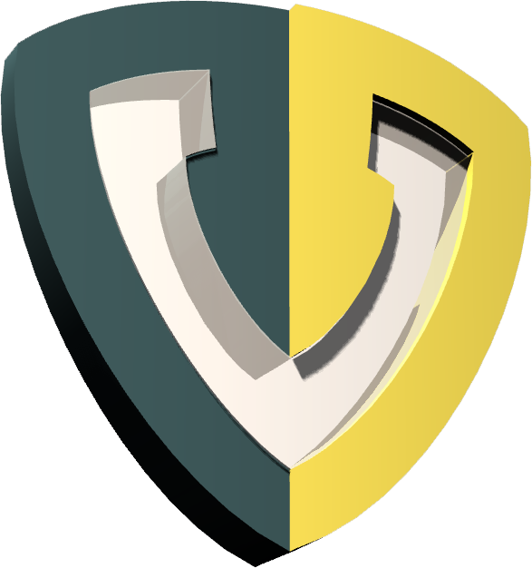

Voorhoede Logo in 3D
At de Voorhoede we keep a close eye on the latest new web standards and technologies. Every now and then we organize in-house workshops to experiment with these new features. During our our workshop '3D in the browser' we we're introduced to the latest developments in 3D technology used on the web, the current state and browser support. We then divided into two teams which both managed to develop a working 3D model in the browser in just 3 hours. Coincidentally both using our Voorhoede logo as their starting point.
In this post you'll find the results of our experiment with a short description of each team's process:
Introducing 3D in the browser
Arend, the latest addition to our developers team, is a 3D / CAD / CAM
savvy developer. So who better to show us around in the possibilities
of 3D in the browser? Arend introduces the team into
WebGL, a new web technology that brings hardware-accelerated
3D graphics to the browser without installing additional software
.
The popularity of WebGL is increasing and
most features are widely support in modern browsers.
To show just how powerful WebGL is Arend presents a few teasing examples: WebGL Water, Polycraft Game, Shelves with material picker and Epic Citadel powered by the Unreal Engine.
To enable developers to quickly work with 3D in the browser, Arend suggests a few frameworks: three.js, Babylon.js, Processing.js, Voodoo.js.
As a bonus, our special guest Sander, did a short demonstration of the LeapMotion, an advanced motion sensor enabling gesture input using up to 4 hands, which even works in the browser, for instance with three.js. Seems like a fantastic topic for our next experiments workshop.
Result team blue: Shield
Team blue - Jasper, Sander & Thadee - translated the Voorhoede logo into a materialized 3D object, which they then added in a 3D scene with lighting, shadows and animations.
To create the 3D model the team imported the Voorhoede logo as vector file into the Rhino 3D modeling software. The imported curves were then extruded and manipulated to create the geometry of the 3D logo shield. The logo colors were added using object materials rather than layer materials to ensure these are included in the export to the obj format.
To render and control the 3D logo shield in the browser, the team leverages the browsers' WebGL capability, using the three.js library. The result is based on the obj loader example and replaces the default model by the obj model of the 3D logo shield. The colors are added by using the mtl material loader. Transparency is added to the 'V emblem' by directly editing the diffusion value in the exported mtl file. For lighting the team added a hemisphere and directional light, simulating a sunny day. Adding shadows and animating individual parts of the appeared more difficult. The light's castShadow and ground surface receiveShadow properties were set to true. However no shadows were rendered yet. The 3D model loaded into the scene was actually a group in which the invidual parts of the shield were nested. By iterating through these children their shadow properties could also be enabled. Finally these children - the left and right side of the shield and the emblem - could also be animated in a sequence by manipulating their position and rotation using requestAnimationFrame.
Result team red: Knight
Team red - Arend, Jeroen, Sanne - transformed an existing 3D model and scene of an average male into a knight equipped with a sword and the Voorhoede logo as a shield.
Rather than starting from scratch, this team imported the three.js example of the materialized 3D model of an average male and added a sword and shield to the model. Just like the blue team, this team added colors to the model using object materials and exported the model to an obj & mtl file.
The examples used by both teams include a pointer listener enabling you to tumble around the 3D model, so don't forget to try that out.
You can view the 3D Knight in a new window.